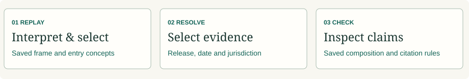

A proof of concept for checking AI answers against versioned guidance.
In a fictional investment-performance corpus, the same question on the same day can produce two different answers. The applicable edition depends on when each jurisdiction adopted it.
How the local replay works

The website and video present recorded results. The local application runs the database queries and checks against saved language-model responses. All examples repeat without provider calls.
The question asks when a new portfolio must enter a composite. Both cases use release 1 and the same date.
New portfolios must be included in a composite no later than the beginning of the first full calendar month after the portfolio comes under management (3.A.6).
prov:composite-inclusion-timing@E2025
ANSWER
Under 3.A.4, new portfolios must be included in a composite no later than the beginning of the second full calendar month after the portfolio comes under management.
prov:composite-inclusion-timing@E2021
ANSWER_WITH_FLAGS
North adopted the 2025 edition on its effective date. South adopts that edition on 1 January 2026. The southern answer also flags a practitioner note. That note can provide context, but the rule checks reject it as authority for a structured claim.
A large withdrawal drops a portfolio below the stated minimum. The known ruling is missing from the first release.
The verifier flags an unresolved reference. A retained claim about the general minimum appears alongside the review outcome.
After approval, the ruling supplies conditions for a limited grace period. The full record includes the cited ruling and the carve-out flag.
Release 3 changes definition 1.D.6. The issued-answer register identifies the earlier response that used the previous definition and marks it as expiring on 1 December 2026. Selecting release 1 still retrieves the earlier evidence under the same implementation.
The evaluation replays a small authored set using the fictional editions and amendments.
| Observation | Scope |
|---|---|
| 13 / 13 layer cases met expectations | Outcomes, citations and case-specific requirements. |
| 3 / 13 baseline cases triggered the rubric | The document baseline received the question without separate date and place controls. |
| 3 secondary review notes | Recorded disagreements are advisory and can coexist with a passing case. |
Structural citation checks cannot establish semantic correctness. The free-text summary sits outside those checks. Retrieval follows recorded edges to a bounded depth, so an unknown dependency may never enter the evidence packet.
Portfolio edition by Eric Ediger. All bodies, rules, examples and identities in the corpus are fictional.